Leaf Shape in Momocs
Use LeafMachine3 leaf outlines in the R packages Momocs and Momocs2.
Every example uses one LM3 run: an American elm sheet, VT_2573061663_Ulmaceae_Ulmus_americana,
with 13 leaves. Its files are in example/.
| Package | Role | GitHub | Website |
|---|---|---|---|
| Momocs | Outline morphometrics (legacy, on CRAN) | MomX/Momocs | momx.github.io/Momocs · CRAN |
| Momocs2 | The rewrite of Momocs | MomX/Momocs2 | momx.github.io/Momocs2 |
| Momit | Imports LM3's JSON into Momocs2 | MomX/Momit | momx.github.io/Momit |
Step 1Turn on Momocs Export
Momocs Export (module 18) is on by default. Find it under Settings → Output → Momocs
Export, or as modules.momocs in LM3_settings.yaml. It reads the Reporter's leaf masks,
so on an existing run only this module reruns.
modules:
momocs: {enabled: true, include_petiole: false, oriented: true, pad_px: 10, largest_component_only: true,
jpg_quality: 100, outline_points: 0, write_fac_csv: true, write_momit_json: true}| Setting | Default | What it does |
|---|---|---|
enabled | true | Write the Momocs files. |
include_petiole | false | Include the petiole. Leaves without one are skipped. |
oriented | true | Use tip-up leaves. false: leaves as mounted. |
pad_px | 10 | White border, px. |
largest_component_only | true | Keep only the largest piece. |
jpg_quality | 100 | JPEG quality. |
outline_points | 0 | Points per JSON outline; 0 = every boundary pixel. |
write_fac_csv | true | Write momocs_fac.csv. |
write_momit_json | true | Write momocs_outlines.json. |
Step 2What LM3 writes
Each run writes reports/Leaf_Momocs/:
reports/Leaf_Momocs/
<sheet>__or-MOMOCS-lamina__x1_y1_x2_y2.jpg one per leaf, black on white
momocs_fac.csv one row per JPG (Momocs's fac)
momocs_outlines.json all outlines, Momit JSON
Momit_JSON/<sheet>.json the same, per sheetEach leaf mask is hole-filled, reduced to its largest piece, made black on white, and padded.
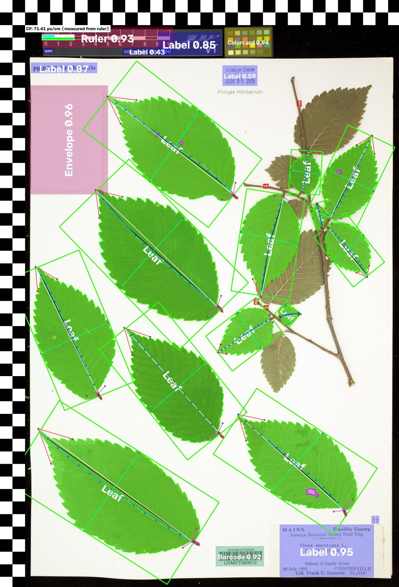
reports/Overlay/Overlay_Summary/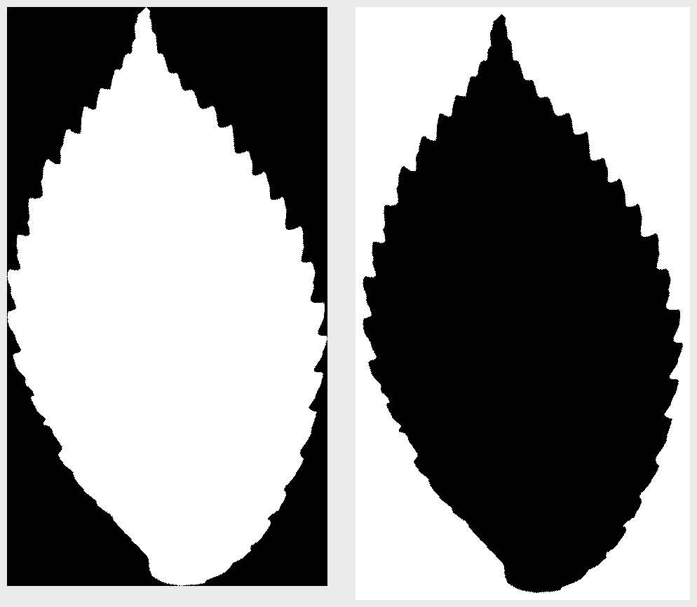
Leaf_Oriented/Lamina_Holes_Mask → Leaf_MomocsThe grouping table
One row per image. The JSON stores the same columns with each outline.
| Column | Meaning |
|---|---|
id | Image name without .jpg. Momocs uses it as the outline name. |
image | JPG file name. |
image_stem | Source sheet. Join your own metadata on this column. |
specimen_id, leaf_id, detection_id, instance_index | Keys into the run database and the reports/Data/ CSVs. |
tree | Leaf_Oriented (tip up, default) or Leaf_Original (as mounted). |
mask_includes | lamina, or lamina_petiole when include_petiole is on. |
box_x1, box_y1, box_x2, box_y2 | Detection box on the working image, px. |
orientation_angle_degreesCW | Clockwise rotation applied to stand the leaf tip up. |
outline_points | Points in the JSON outline. |
pad_px, image_width, image_height | White border and JPG size, px. |
cf_px_per_cm, cf_source | Scale in px per cm, and its source: measured_from_ruler, measured_from_fieldprism or predicted_from_megapixels. |
cf_px_per_cm_predicted_by_mp | Scale estimated from image resolution alone. |
work_scale | Working image size relative to the original scan. |
Step 3Install the R packages
Requires R 4.1 or newer. Momocs is on CRAN. Momocs2 and Momit (its JSON importer) are on GitHub.
install.packages(c("Momocs", "ggplot2", "patchwork", "remotes", "magick", "jsonlite"))
remotes::install_github("MomX/Momocs2")
remotes::install_github("MomX/Momit")R older than 4.4: install these first, then Momocs:
remotes::install_version("RRPP", "1.4.0"), remotes::install_version("geomorph", "4.0.6").
Step 4Verify your export
Loads a Leaf_Momocs folder both ways, checks that they agree, and saves a preview of every
outline. Without a path it checks the example. Routes with missing packages are skipped.
Rscript verify_lm3_momocs.R path/to/your_run/reports/Leaf_MomocsLM3 -> Momocs export check Folder: LM3/tools/MOMOCS/example/Leaf_Momocs 1. Files PASS leaf images found (13 JPG) PASS momocs_fac.csv found PASS momocs_outlines.json found PASS every image is a dark leaf on white with a white border 2. Route 1: Momocs import_jpg + momocs_fac.csv PASS import_jpg reads every image (13 outlines) PASS every outline has at least 3 points (smallest has 395) PASS every outline runs clockwise PASS momocs_fac.csv has exactly one row per image (13 rows, 13 images) PASS efourier runs on the whole set (13 leaves x 48 coefficients) 3. Route 2: Momit::from_json -> Momocs2 PASS one JSON row per leaf image (13 rows, 13 images) PASS JSON ids match the image file names PASS outlines load as a Momocs2 'out' column PASS every JSON outline runs clockwise PASS every JSON outline starts at its lowest point PASS Momocs2 eft runs PASS Momit::to_Momocs builds a legacy Out 4. Routes agree PASS both routes trace the same outline (within 2 px) (edge offset 0.80 to 0.86 px over 13 leaves) Quick look saved: LM3/tools/MOMOCS/example/Leaf_Momocs/lm3_momocs_check.png Summary: 17 PASS, 0 FAIL, 0 SKIP Your LM3 export is ready for Momocs and Momocs2.
Step 5Load the leaves into Momocs
Read the JPGs, then attach momocs_fac.csv in the same order (match on id).
library(Momocs)
jpgs <- list.files("example/Leaf_Momocs", pattern = "\\.jpg$", full.names = TRUE)
coo <- import_jpg(jpgs)
fac <- read.csv("example/Leaf_Momocs/momocs_fac.csv")
fac <- fac[match(names(coo), fac$id), ]
fac$size_class <- cut(rank(sapply(coo, coo_area)), 3, labels = c("small", "medium", "large")) # demo groups, step 11
leaves <- Out(coo, fac = fac)
panel(leaves)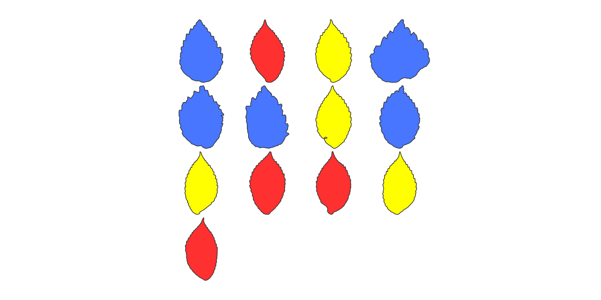
panel()Step 6Center, scale and resample
Leaves are already tip up. Center, scale and resample.
norm <- leaves %>% coo_center() %>% coo_scale() %>% coo_sample(200)
stack(norm)Tiny leaves: coo_sample(200) needs at least 200 points. Drop specks first
(filter(leaves, outline_points >= 200)) or use coo_interpolate.
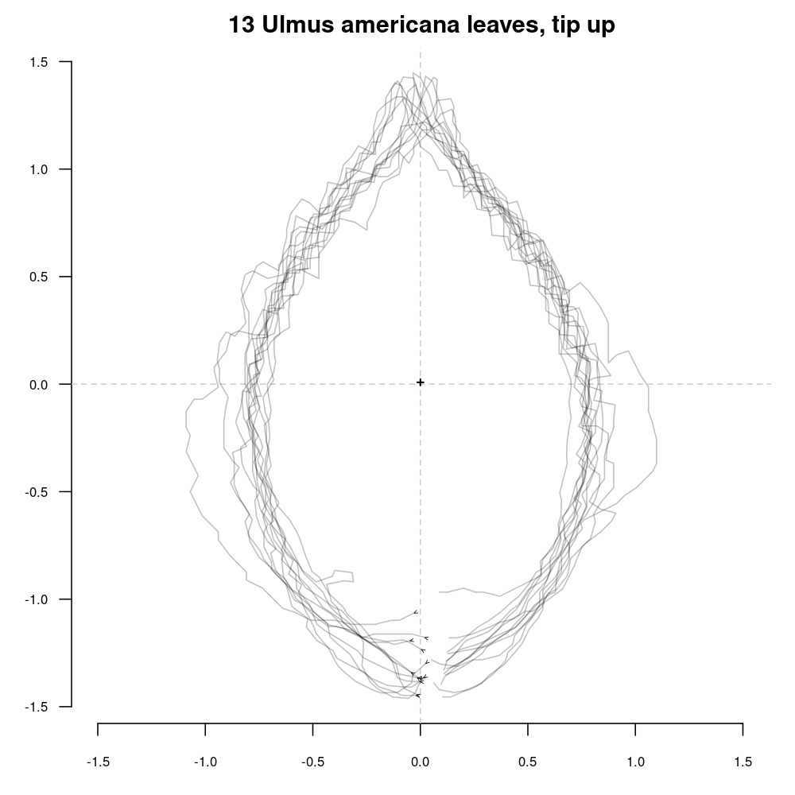
stack()Step 7Shape descriptors
Measurements are in pixels. For cm², divide by cf_px_per_cm² (71.41 px/cm on this sheet, from its ruler).
area_px <- sapply(leaves$coo, coo_area)
area_cm2 <- area_px / leaves$fac$cf_px_per_cm^2
data.frame(area_cm2, elongation = sapply(leaves$coo, coo_elongation),
circularity = sapply(leaves$coo, coo_circularity), solidity = sapply(leaves$coo, coo_solidity))| Leaf (box) | Area px | Area cm² | Perimeter px | Elongation | Circularity | Convexity | Solidity |
|---|---|---|---|---|---|---|---|
1432_1583_1580_1718 | 8996 | 1.8 | 466.9 | 0.1323 | 24.23 | 0.7686 | 0.9343 |
1628_1006_1743_1186 | 9732 | 1.9 | 488.6 | 0.3381 | 24.53 | 0.7386 | 0.9374 |
1498_714_1699_989 | 30000 | 5.9 | 898.1 | 0.2775 | 26.89 | 0.6939 | 0.9349 |
1690_1109_1985_1449 | 55120 | 10.8 | 1268 | 0.3662 | 29.16 | 0.7123 | 0.9421 |
1086_1595_1439_1898 | 59840 | 11.7 | 1275 | 0.3049 | 27.17 | 0.7012 | 0.9478 |
1674_616_2025_1157 | 98660 | 19.3 | 1794 | 0.4304 | 32.62 | 0.6776 | 0.9428 |
1207_928_1583_1553 | 127500 | 25.0 | 1893 | 0.4242 | 28.11 | 0.7464 | 0.9355 |
28_1363_533_2156 | 222300 | 43.6 | 2633 | 0.4725 | 31.2 | 0.7073 | 0.9444 |
554_1708_1160_2401 | 226700 | 44.5 | 2579 | 0.4592 | 29.35 | 0.7184 | 0.9429 |
1195_2193_1914_2818 | 234300 | 45.9 | 2626 | 0.4535 | 29.43 | 0.7283 | 0.9432 |
455_383_1237_1026 | 282000 | 55.3 | 2877 | 0.4505 | 29.35 | 0.7355 | 0.9326 |
385_923_1152_1710 | 355200 | 69.7 | 3141 | 0.4303 | 27.77 | 0.7328 | 0.9558 |
63_2281_1022_3038 | 388600 | 76.2 | 3315 | 0.4871 | 28.28 | 0.7402 | 0.9475 |
Step 8Choose the number of harmonics
On these leaves, 5 harmonics capture 90% of shape power, 7 capture 95%, 17 capture 99% and 28 capture 99.9%. Teeth appear past about 20. This guide uses 12: the full leaf shape, without teeth.
calibrate_harmonicpower_efourier(norm, nb.h = 30)
calibrate_reconstructions_efourier(norm, range = c(1, 2, 4, 6, 8, 12, 16, 20, 30))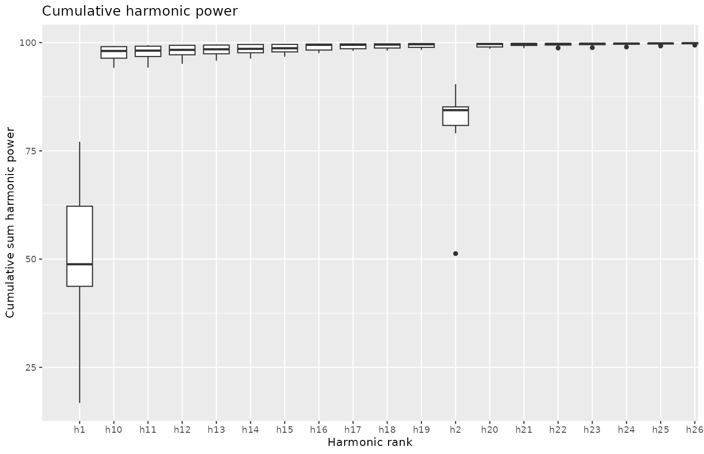
calibrate_harmonicpower_efourier()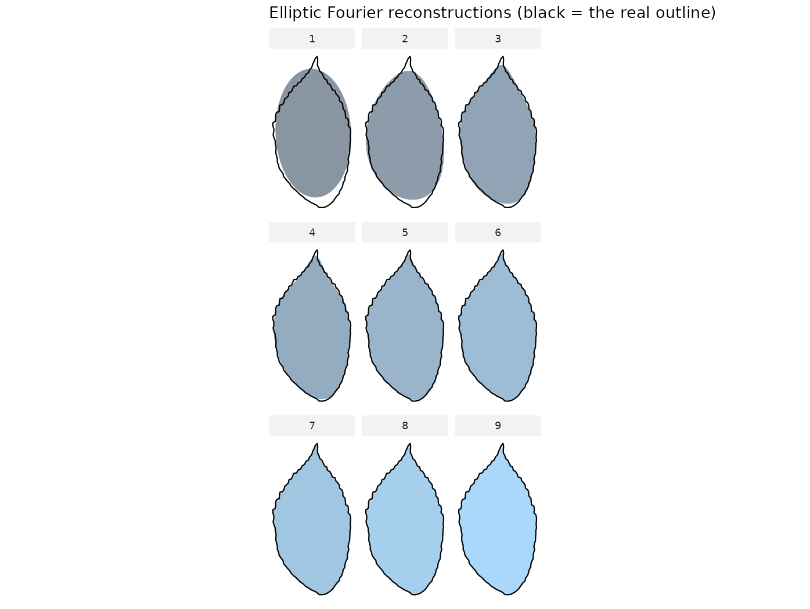
calibrate_reconstructions_efourier()Step 9Elliptic Fourier analysis
ef <- efourier(norm, nb.h = 12, norm = FALSE)Use norm = FALSE. LM3 already oriented the leaves. The default, norm = TRUE,
re-aligns each leaf on its first ellipse: it turns them sideways and can flip some 180°.
Step 10Morphospace
PCA of the Fourier coefficients. PC1–PC3 hold 48.6%, 34.6% and 5.8% of shape variation.
pc <- PCA(ef)
plot_PCA(pc, ~size_class)
PCcontrib(pc, nax = 1:3)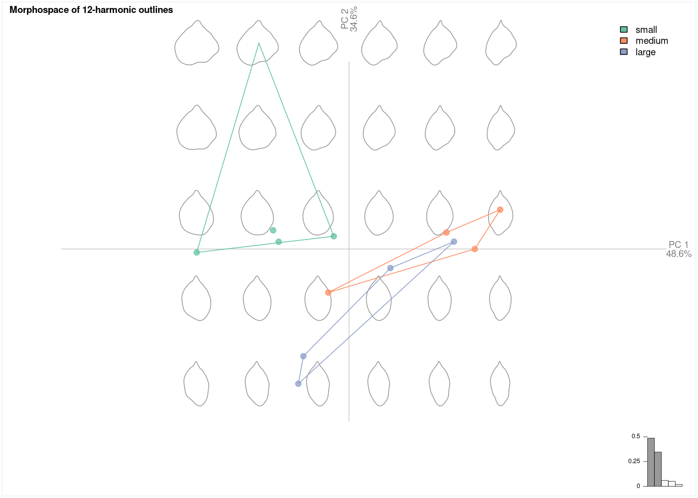
PCA() · plot_PCA()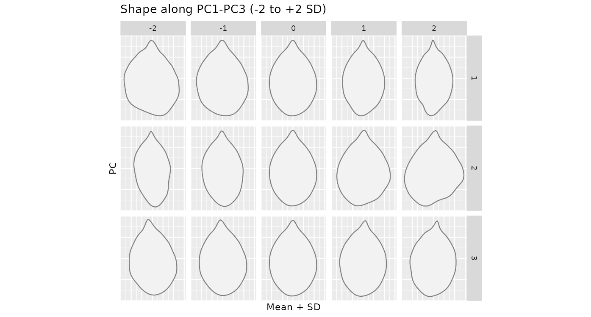
PCcontrib()Step 11Groups
Group methods need a factor. The example uses three size classes, for demonstration only.
Join real factors on image_stem:
meta <- read.csv("my_specimens.csv") # one row per sheet: image_stem, species, site, ...
leaves$fac$species <- meta$species[match(leaves$fac$image_stem, meta$image_stem)]
ms <- MSHAPES(ef, ~size_class); plot_MSHAPES(ms)
MANOVA(pc, ~size_class, retain = 3)
CLUST(ef, ~size_class, hclust_method = "ward.D2", k = 3)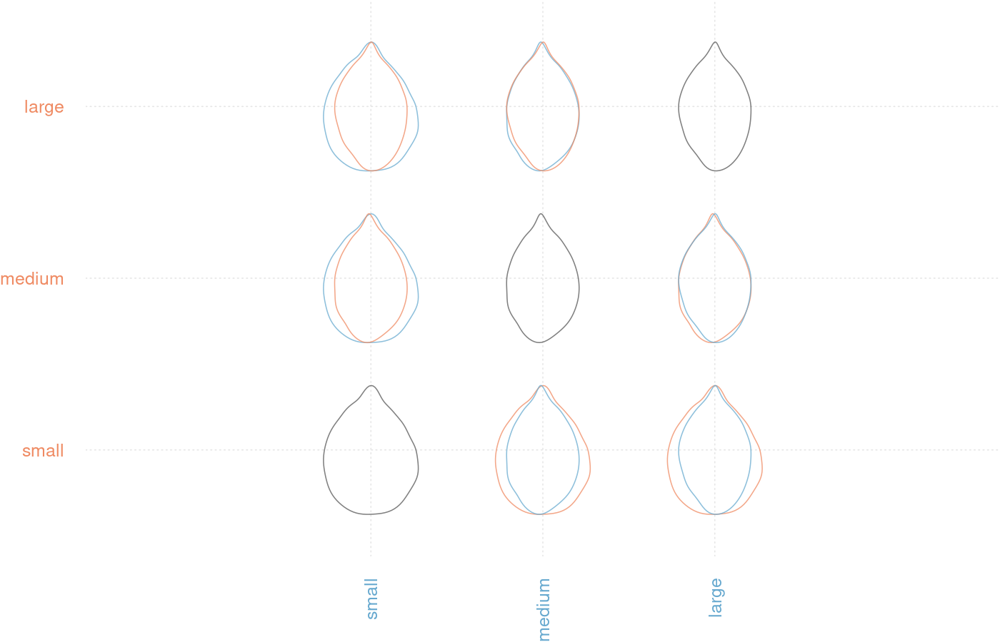
MSHAPES() · plot_MSHAPES()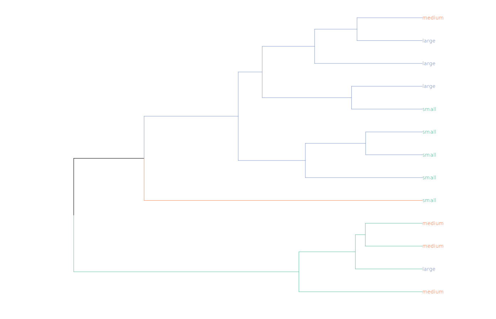
CLUST()Step 12The same leaves in Momocs2
Momocs2 has no image importer. Momit reads momocs_outlines.json, grouping columns included,
and can convert it to a legacy Momocs object.
tb <- Momit::from_json("example/Leaf_Momocs/momocs_outlines.json")
tb <- tb %>% Momocs2::coo_center() %>% Momocs2::coo_scale() %>% Momocs2::coo_sample(200)
Momocs2::mosaic(tb)
Momocs2::eft(tb, nb_h = 12)
legacy <- Momit::to_Momocs(tb) # a legacy Momocs Out, with the same facPrefix calls with Momocs2::: Momocs masks its coo_* functions. Harmonic power also
differs: Momocs2 counts the first harmonic, so it reports 99% at 2 harmonics here. Don't compare thresholds across packages.
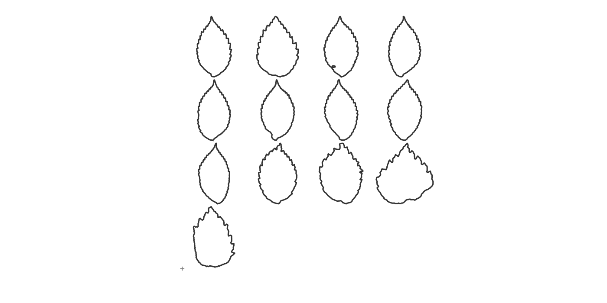
Momocs2::mosaic()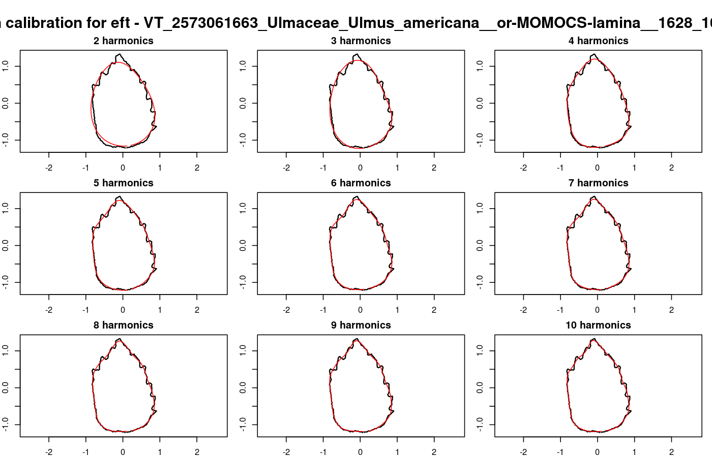
Momocs2::eft_calibrate_reconstruction()Step 13LM3 keypoints as landmarks
LM3 places 31 keypoints per leaf (tip, base, 15 midvein points, apex, base corners, petiole, widest point) in
reports/Data/landmarks.csv. They join to the Momocs files on the detection box. After Procrustes, PC1–PC3 hold
52.9%, 22.9% and 12.4% of the variation.
lm <- read.csv("example/Data/landmarks.csv")
lm <- lm[lm$instance_index == 0, ]
lm$y <- -lm$y # image y runs down; Momocs y runs up
lm$box <- sub(".*__", "", lm$crop_file_token) # x1_y1_x2_y2, as in the image names
L <- lapply(split(lm, lm$box), function(d) as.matrix(d[order(d$kpt_index), c("x", "y")]))
Lp <- fgProcrustes(Ldk(L))
PCA(Lp)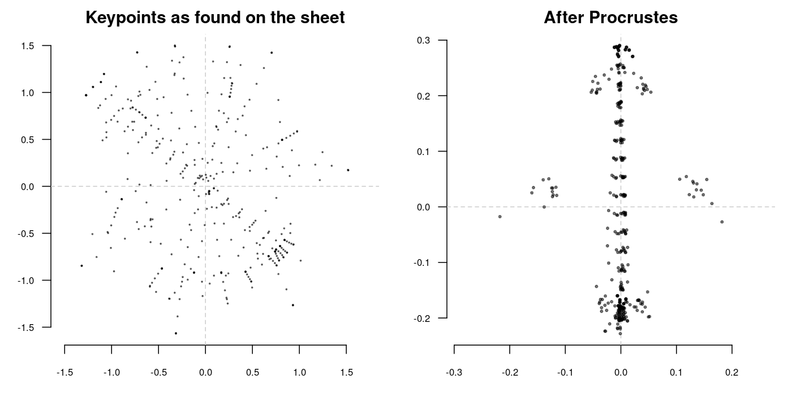
Ldk() · fgProcrustes()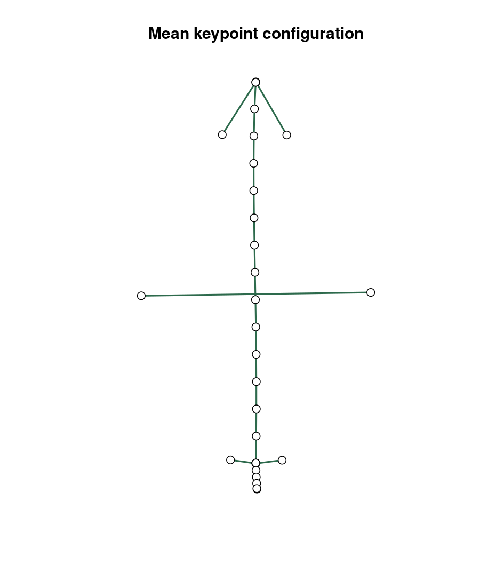
MSHAPES() · ldk_links()Silent pitfalls
These give wrong results without an error. LM3's export avoids the first four.
- Light leaf on dark, or a leaf touching the edge: both importers trace the wrong region.
- Open holes: Momocs walks down from the image center to find the edge, and can trace a hole instead.
- y-down coordinates: leaves load mirrored.
- Empty images:
import_jpgloops forever. efourier(norm = TRUE)on oriented leaves: see step 9.coo_baseline(Momocs 1.5.0) rotates the wrong way unless the shape is already horizontal. UseMomocs2::coo_baseline.- Groups from file names:
lf_structure()can't split LM3 names. Usemomocs_fac.csv.
Files in this folder
| Path | Contents |
|---|---|
| LM3_Momocs_Guide.html | This guide. |
| verify_lm3_momocs.R | Checks an export (step 4). R requirements are in its header. |
| demo_lm3_momocs.R | Steps 5–13; writes every figure. |
| example/Leaf_Momocs/ | The example sheet's Momocs export. |
| example/Data/landmarks.csv | Its keypoints. |
| example/*_Overlay_small.jpg | Its summary overlay, downsized. |
| figures/ | Figures on this page, and descriptors.csv. |
Redraw the figures (run from this folder):
Rscript demo_lm3_momocs.R example/Leaf_Momocs figuresCite Momocs as: